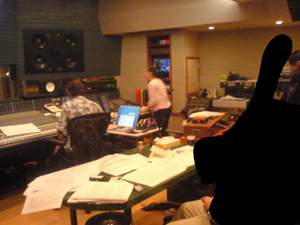
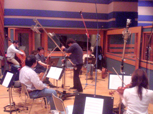
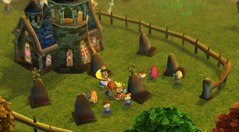
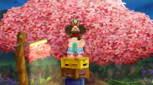
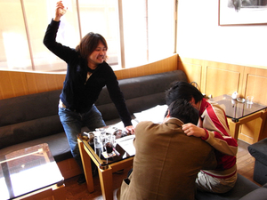
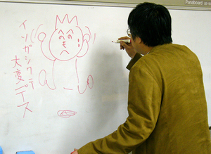

こんにちは。お久しぶりのPR大臣・中村です。
4月某日。
都内某スタジオにて、『王様物語』のBGM収録が行われました。
今回は、その収録現場に行った話です。
---------------------
ある小雨の日。
きむPとPR大臣はスタジオに向かっていた。
道に迷いまくるというハプニングもなんとか乗り越え、
おそるおそるスタジオに入ると…、あ、いた！
M氏！
しかし、とてもじゃないが近寄りがたい雰囲気をかもし出している。
ものすごくピリピリしている。
以前の優しかったM氏とは違う。
「収録っていうのは、だいたいこんなもんだ」
となりで、きむPがつぶやく…。
「しかも今回は生音収録だから、緊張感は尋常じゃない」
そう。
バイオリン、コントラバス、フルート… 様々な楽器を演奏する
プロたちが一堂に会しての収録。
「こんな演奏…なかなか聴く機会はないぜよ」
きむPの表情にも緊張が走る。
「じゃあはじめましょうか」
M氏が静かに、しかし力強く言った。
ついに演奏が始まった。
「………………！！！」
「なんだろう、この感じ。とにかく響いてくる。胸に響いてくる！」
ジャーーーーン
という音の洪水がスタジオに満ち、
ドーーーッと感動が押し寄せてくる。
生の演奏ってこんなにスゴイんだと思った。
その日は一日、その演奏が耳の奥に残っていた。
もちろん、この生音たちはゲームに収録されている。
楽しみにしていて欲しい！


きむＰです。
やっとこさ、王様物語の情報出しを再開しました！
かわいいけど、意外とピリカラ（？）なところがあるって
伝わるといいなぁ～。
ここから先は、たちどまれないですぞ。ＰＲ大臣！
だすしかない。
だだだだだっとだすしかないのよ（笑）。
毎月毎月～。毎週毎週～。
でも、まだゲームは調整中。
そして”夏発売予定”にむけて調整中の挑戦中。
＊＊＊＊
今日はここで、僕が好きなシーンを二つ。↓↓↓

※町の人々の悲しみの声が聞こえてきますな。
戦いで戦死者でも出たのかなぁ～。おそろしや。

※ドブローク王です。
「かんぱーい」
春だしね～、さぁみんなで花見にいきましょ～。
・・・と、さけびつつ、今年もスタッフお花見会は
開けないのか！？
４月４日の本日はドブローク王が
桜の下でのんだくれてんのね～。
ちょっとこれ、ジェラシーポイント＋３０pt。
ゲームの中の彼に嫉妬ですな。
あ～春だから。
あ～遊びたい。
あ～酒のみたい。
あ～のんだくれたい。
のんだくれて、すっぱだかになって、
あばれまわりた～い。
うぃ～っ。
ひっくっ。
・・あ、やばいやばい。んなことするヒマあったら
プレイプレイプレイ。
はいはいはいはいはい（汗;)
お疲れさまです。きむＰです。
あー、なんだかんだいって、開発はいまラストスパート一歩前。
あくせく度１２０％！？
そんなさなか、ＰＲ大臣の中村さんから
お怒りの言葉をいただきました。
ご、ごめんなさーい。
ＰＲ大臣「もっと御意見ボックスのお便りに答えてくださいよ！きむＰ！」
きむＰ「は、はい！了解しました！」
と、プリントアウトされた、大量のお便りが・・目の前に。
というわけで、新規カテゴリー登場で！
です。右側の「カテゴリ」内「～お便りのコーナー～」から、どぞ。
・・・・・
・・・・・（１時間後）
・・・・・あ、あれ？あれ？あれれ？
ひゃ～、だめだ～ たくさんのお便りがきてるのに
なかなか答えられない。（体力的に・・）
今週はここらで、ひとまずサンクス。ご勘弁。
みなさん、ゲームの完成を楽しみにしていてくださいねー♪
ＰＲ大臣「うーむ、では 目標をさだめます。来週月曜から、
１日１通、がんばっちゃってください！」
きむＰ「は、、はい。かしこまりました！」
こんにちは。ＰＲ大臣・中村です。
『王様物語』のデザイナーといえば、皆葉英夫さんと倉島一幸さんですね。
今回は、このお２人ときむＰの打ち合わせ現場に突撃しました。
そう。打ち合わせ現場に突撃シリーズ 第３弾です！
いつまで続くか分からないですが、いつのまにかシリーズ化してました。
----------------------
---今日は何のミーティングですか？
きむＰ「今後、『王様物語』が、雑誌やWEBとかに載ったり、
ポスターつくったりするじゃない。
その素材の話ね。いつまでにどんな絵を描いてもらうか。
そのへんをダンドリまっせ～。へっへっへ」
---皆葉さんときむＰは、組むのは初めてですか？
皆葉「昔会社がいっしょで、その頃からの長い付き合いですが、
仕事として組むのは、初めてですね…」
---きむＰの初対面の印象はどうでした？
皆葉「木村さんが会社宛に送ってきたFAXが第一印象でしたね。
ナイロビから送ってきた、“アフリカはてごわいです”っていうFAX」
きむＰ「FAXかい！」
---今回組んでみてどうですか？
皆葉「木村さんはマメな人ですね。
こんなに頻繁に電話かかってきたことないので嬉しい悲鳴です（笑）。
でも、この３人での打ち合わせは楽しいですし、
このプロジェクトは、参加していて面白いですよ」
倉島「この３人は付き合いは長いけど、３人が同じプロジェクトで
組むのは初めてだよね。ついに、って感じで嬉しいよね」
きむＰ「そうね、“ついに感”があるよね～」
---きむＰからの皆葉さんの印象は？
きむＰ「当時、会社にマ●●のものすごく大きな絵が飾ってあって、
これ描いた人すごいな～って思って、うっとりと眺めてたの。
それを描いたのが皆葉さんだったんだよね」
皆葉「手描きだったんですよ、あれ」
きむＰ「あと、皆葉さんに参加してもらって助かっているのが……、
たとえば、『王様物語』を開発していくなかでも、絵的なアドバイスが
欲しいっていうことがよくあるんだけど。
皆葉さんに聞くと、的確なアドバイスがすぐに来る」
---倉島さんはどうですか？
きむＰ「アイデアを出してもらうことが多いかな。
でも、来たアイデアが、本人もよく分かってないものだったりしてさ」
倉島「いやいや、木村さんからの指示が超シンプルで、
“ちょっとアイデア出して”みたいなのだからじゃないですか！
ムチャぶりもいいとこですよ！」
---まあまあ、落ち着いてください。
皆葉「そういえばこの３人といえば、15年くらい前
オーストラリアに行ったとき、みんなでバンジージャンプやったよね」
倉島「そうそう、２人は飛んだのに、木村さんだけ飛べなくて、
“チキンＴシャツ”をもらってたよね。あのＴシャツまだ持ってるの？」
きむＰ「その話はするんじゃねえ！」（倉島氏につかみかかるきむＰ）
皆葉「私のために、ケンカはやめてっ！」
（といいつつ、コップを掴み、二人におどりかかる皆葉氏）
----------------------
さて、最後はプチ惨事となってしまいましたが、
今後、このお２人から、たのしい絵がどんどん上がってくると思います。
皆さん、お楽しみに！

それでは、取っ組み合う倉島氏＆きむＰと、それを止めようとする（？）
皆葉氏の、微笑ましい写真をご堪能下さい。
こんにちは！
久々登場の和田です。
いつもならここで長ったらしい前置きをするんですが、今日は会社で
シラフで書いているのでそんなことにはなっていませんよ（ニコッ！
本当はいつものようにキムＰが書いてくれる予定だったのですが、
もう半端なくてんぱってて、やばそうなんで私が代打で書いてます。
開発は今がまさにクライマックスという状況です。
いろんな要素が出揃って、それをがっちゃんこして、がっちゃんこしてみたら
あーーー！動かないーーー！とかあーーーこれが足りないーーー！とか
あーーーここ面白くないーーーとか（笑
最後のはネタですが、そんな事が毎日起こっているのでもう大変です。
実はこんな時、ディレクターは地獄のような状況でも
かえって楽しかったりするんですよね。
それは一番もの作りに集中する時であり、てごたえをガンガン感じるので
アウトプットとインプットがとても速いサイクルで起こって
なかばトランス状態におちるというか、ハイになるんですね。気持ちよい！
でも今回はキムＰの名のとおり、プロデューサーなので、いよいよ再開しそうな
宣伝の仕込みとかパッケージ作ったりとか、
純粋なゲーム開発とは違う部分の仕事が
波のように押し寄せて来る時期だったりします。
しかし、キムＰは現場からなかなか目を離せません。
現場でもプロデューサーの果たす役割が重要で、
仕事が山のように沸いて出てくるわけです。
というわけでもう大変。祭りダーーーー！って感じです（笑
私も笑ってる場合じゃなかったりするんですが、ゆるく笑うことで
なんとか自分をごまかしてます。
多分こんな愛と情熱が詰まったゲームだから
きっと良いものになるに違いない！
っとか思いながら、２末ＲＯＭなるものをプレイしてたら、、、（汗
いやあ、まだまだ予断を許しませんね。
もっともっとがんばっていかないとできあがりません。
ただ、動いてる画面はものすごく進化してます。いい。
ヘンナノも選考しないといけないし、続々とおもしろ要素も増えてきてます。
早く公開できると良いなぁ（とぉい目
ではでは、私はこの辺でお付き合いがあるのでお酒飲みにいってきます。
え？いやいや、仕事ですよ～（笑
今週の画像は、ボードに訳の分からない絵を描き出すキムＰ。 
遊んでいるわけではなく、精神集中のための儀式です。


 クリエイターズBLOG トップ
クリエイターズBLOG トップ